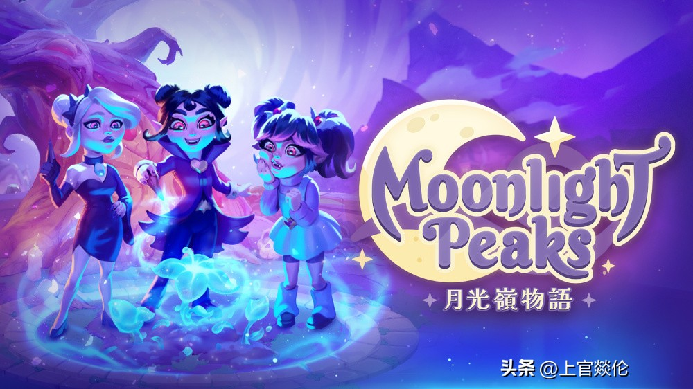

Switch7月8款大作来袭！双机体验全面升级
今年七月游戏阵容亮点纷呈，《Truxton》这款传奇空战作品时隔三十多年重磅回归，全新高清重制版即将登陆。同期还有多款诚意之作值得期待：

🎹 必玩惊喜：《节奏天国：奇迹之星》正统续作上线！

玩法依旧保留经典的音乐点击操作，简单轻松易上手。Switch 2 版本不仅支持高帧率运行，更独家加入简体中文支持；目前试玩版已开放下载，老机型玩家也能即刻体验这一经典回归之作。
🦖 粉丝专属：《数码宝贝物语：时空异客》7 月发售！
剧情分设“过去”与"Future"两条时间线，收录超过四百只数码兽，内容量巨大。若你拥有 Switch 2，不仅能享受极致细腻的 4K 画质，之前的试玩版存档还能无缝继承到正式版中，无需重复游玩即可直接开启冒险。

🌿 模拟经营新体验：如果你偏爱轻松休闲，《月光岭》将为你带来独特的治愈之旅——化身吸血鬼开设魔法农场，与狼人、魔女等个性 NPC 互动；而喜欢 Falcom 校园风格的玩家则不容错过《京都迷城：樱花幻舞》，在唯美日常剧情中穿插异界地牢探索。
⚔️ 动作 RPG 高光时刻
备受期待的《蔚蓝幻想 Relink》推出“无尽黄昏”完整版，画面表现全面升级；长寿名作《异度神剑 2》本次更是带来了重大优化版本，在 Switch 2 上帧率稳定锁定全程 60FPS，加载速度较旧机型提升约 30%。此外，《最终幻想 X/X-2》高清重制版也已就绪，画质细节大幅修复的同时保留了原汁原味的剧情逻辑，怀旧党们不容错过这一惊喜上线的好消息。
🎉 多元玩法集结
除了上述重磅作品，本期阵容还包括主打模拟都市生活的《嗨嗨人生 2》，以及经典派对新作——热门派对游戏《斯普拉遁 4》全新涂地模式同步登场；同时，《健身拳击 3》通过强化动作捕捉技术，为你呈现更流畅的运动体验。不同口味的玩家在此定能各取所需，尽享七月 gaming 盛宴！
🚀 画质革新回顾
近期升级至新版主机的玩家会发现，游戏画面细腻度确实有了显著提升。尤其是刚刚回归的《Truxton》，其全新高清重制版在双机上的表现堪称教科书级别，完美契合本次“双机体验全面升级”的主题。
关于我们
📱 公众号名称：三天笔记
✍️ 作者：曾三天
扫码关注公众号，获取每日最新资讯

商务合作与版权
商务合作 / 内容投稿 / 品牌推广
请关注公众号「三天笔记」后台留言联系
版权声明：本文由作者整理，转载需注明出处。